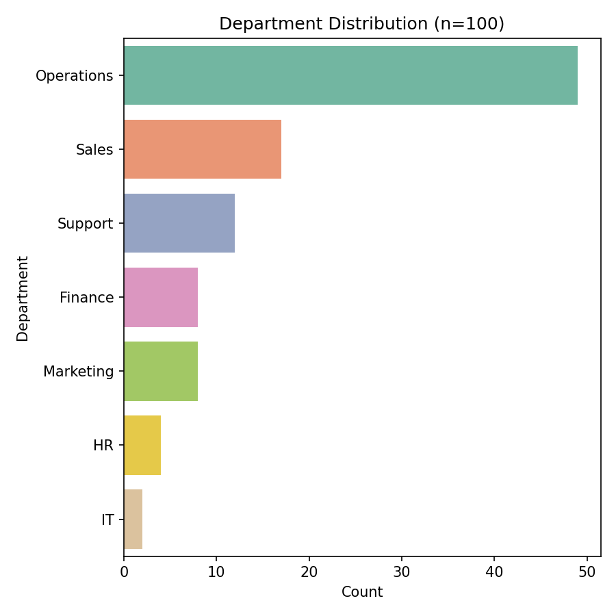

Operations department frequency count: 49

import pandas as pd
import matplotlib.pyplot as plt
import seaborn as sns
df = pd.read_csv("data.csv")
ops_count = (df['department'] == 'Operations').sum()
print(f"Operations department frequency count: {ops_count}")
plt.figure(figsize=(6,6))
sns.countplot(data=df, y='department', order=df['department'].value_counts().index, palette='Set2')
plt.title('Department Distribution (n={})'.format(len(df)))
plt.xlabel('Count')
plt.ylabel('Department')
plt.tight_layout()
plt.savefig("chart.png", dpi=150)
plt.close()
print("Saved chart.png and visualization.html. Done.")
Contact: 24f2005647@ds.study.iitm.ac.in